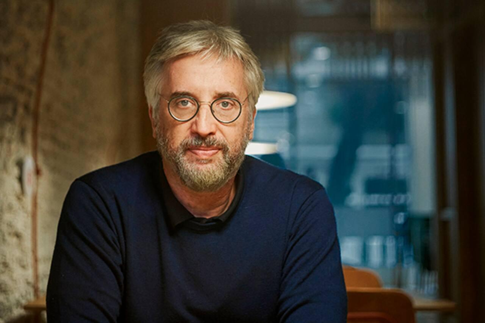
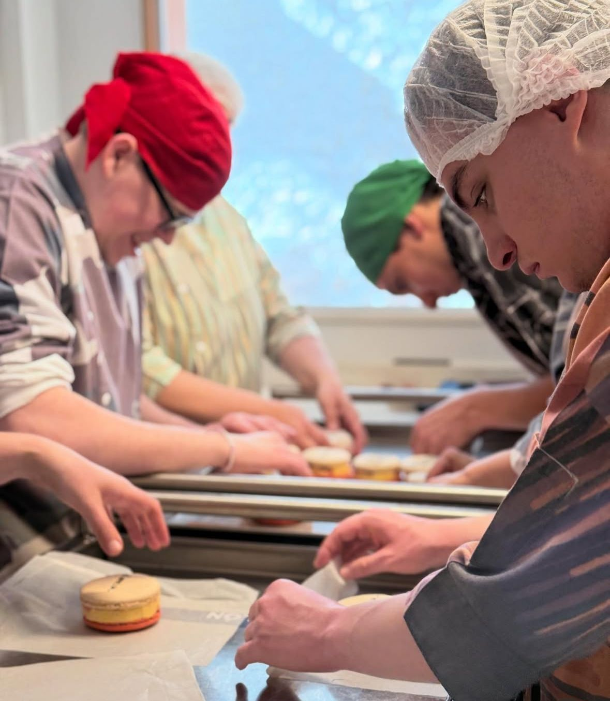

Nuestra historiase sirve en la mesa
¿Quiénes somos?
Somos un restaurante gastronómico innovador, cálido e inclusivo, donde las personas pueden disfrutar de una buena comida y conocer una propuesta que genera oportunidades laborales. El menú está diseñado por el chef Takehiro Ohno. Alamesa funciona principalmente durante el mediodía y ofrece diferentes platos y postres. Además de la propuesta gastronómica, ofrecemos oportunidades laborales formales para personas neurodivergentes.... Nuestro propósito central es generar inclusión laboral real, ofreciendo un espacio de trabajo donde las personas puedan desarrollarse, tener responsabilidad y alcanzar mayor autonomía.

Todo empezó con una preocupación.
Soy Fernando Polack, médico e infectólogo y, además, soy papá de Julia una joven neurodivergente. Cuando Julia estaba terminando la escuela y acercándose a la vida adulta, empecé a preguntarme qué oportunidades tendría para desarrollar una vida independiente y acceder a un trabajo. La respuesta surgió a partir de una experiencia que había vivido años antes en Roma. Recordé un restaurante lleno de familias, movimiento y situaciones cotidianas, y pensé que ese podía ser un entorno adecuado para que jóvenes como mi hija pudieran trabajar, relacionarse y desarrollar autonomía. La idea comenzó siendo un proyecto pequeño para un grupo de jóvenes y fue creciendo hasta convertirse en un restaurante.
El nombre del restaurante surge de una expresión cotidiana: la manera en que muchas familias llaman a sus hijos cuando llega la hora de comer.
En Alamesa queremos que cada persona que nos visite se sienta en casa. Esa invitación a la mesa expresa el sentido de nuestro restaurante: compartir una buena comida, encontrarnos y recibir a cada persona con calidez. Porque en nuestra mesa hay lugar para todos.

Inclusión laboral
Alamesa convierte la gastronomía en un espacio donde las personas neurodivergentes pueden trabajar, relacionarse, adquirir experiencia y desarrollar mayor autonomía, formando parte activa de la vida laboral.
Un entorno pensado para trabajar
En Alamesa, la inclusión también está en la manera de organizar las tareas. El restaurante desarrolló herramientas y procesos adaptados para que las personas neurodivergentes puedan participar del trabajo cotidiano en la cocina y en el servicio.
Un lenguaje compartido
Un sistema de colores relaciona los platos con los recipientes de sus ingredientes. Esta organización visual facilita identificar cada preparación y seguir sus pasos. También se desarrollaron sistemas informáticos pensados para quienes los utilizan y se dedicaron meses a probar los procedimientos y capacitar al equipo antes de la apertura.
Experiencia, autonomía y pertenencia
La propuesta busca que cada persona tenga una tarea relevante dentro de un proyecto gastronómico sustentable. El trabajo compartido abre oportunidades para adquirir experiencia, asumir responsabilidades y construir vínculos, con el objetivo de favorecer una mayor autonomía y una participación plena en la vida laboral.
Nuestros valores


Un equipo que hace la diferencia
En Alamesa, cada plato es el resultado de un trabajo compartido. Nuestro equipo reúne a personas con distintas habilidades y formas de aprender, que encuentran en la gastronomía un espacio para aportar, relacionarse y crecer.
La preparación de los platos y la atención en el restaurante forman parte de una misma experiencia. Con tareas organizadas y herramientas adaptadas, cada integrante puede adquirir experiencia, asumir responsabilidades y desarrollar mayor autonomía.
Nos une el compromiso de ofrecer buena comida y una atención cálida. Creemos en el valor de cada persona y en la importancia de construir un lugar de trabajo donde todos tengan una participación real.